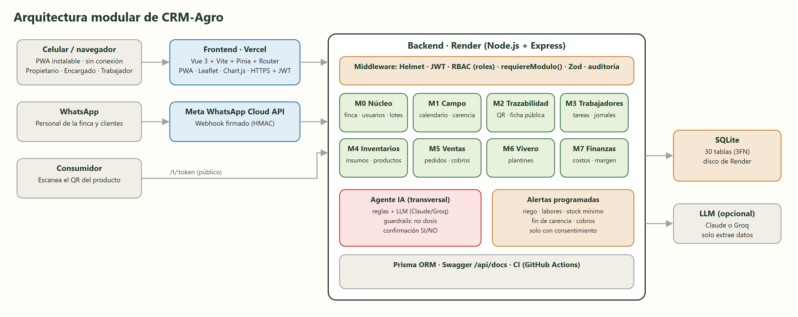
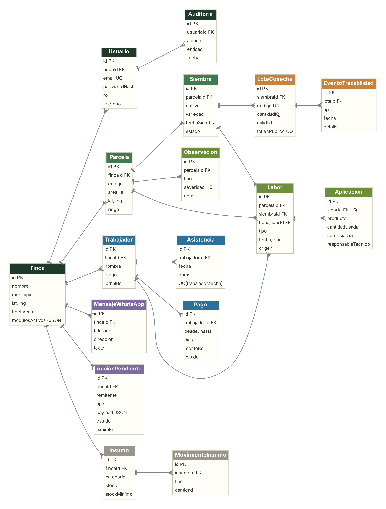
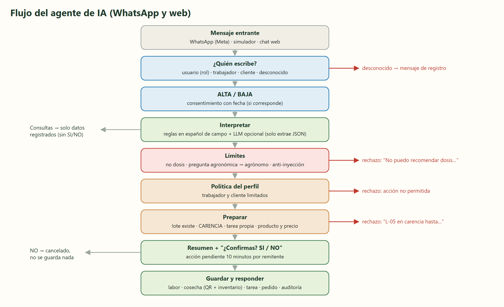
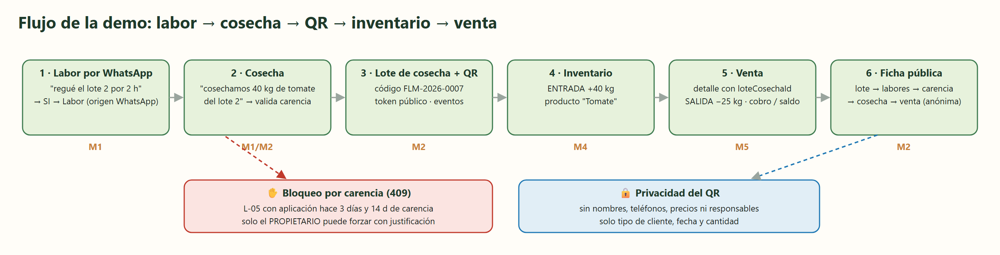
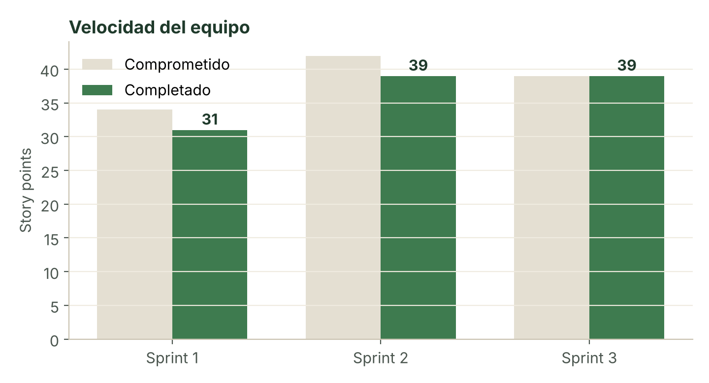
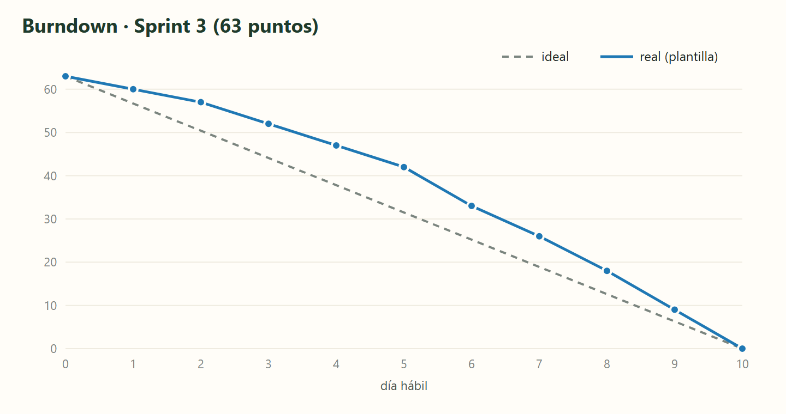
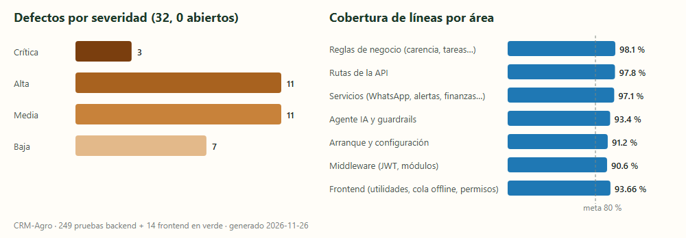

| Grupo | Los Pasankallas (trabajo individual) |
|---|---|
| Integrante | Beymar Emilio Poma Queso (Product Owner, Scrum Master y Developer) |
| Asignatura | Programación Gráfica y Multimedia |
| Docente | Ing. Juan Gabriel Lazcano Balanza |
| Hito | 5 |
| Fecha | Noviembre de 2026 |
| Repositorio y despliegue | Pendiente de despliegue (Vercel + Render) |
Todos los datos del sistema y de este informe (finca, personas, teléfonos, productos agroquímicos) son ficticios.
Las fincas pequeñas de frutas, hortalizas y vivero —como la finca ficticia Los Molles de Comarapa, con 6,5 ha y ocho trabajadores— registran sus labores en cuadernos y en grupos de WhatsApp. La información se pierde, no se controla bien el período de carencia de los agroquímicos, no se sabe si un lote deja ganancia y los compradores empiezan a pedir trazabilidad.
CRM-Agro es un CRM web modular y de bajo costo: la finca empieza con los módulos esenciales y activa los demás cuando los necesita. Funciona en el celular aun sin señal (PWA) y tiene un agente de IA por WhatsApp que convierte mensajes como "hoy cosechamos 40 kg de tomate del lote 2" en registros, siempre con confirmación previa (SI/NO) y sin recomendar nunca dosis ni productos.
Objetivo general: construir y desplegar un CRM agrícola modular que cubra el ciclo labor → cosecha → trazabilidad QR → inventario → venta, con un canal de WhatsApp seguro. Objetivos específicos: (1) núcleo con roles y módulos activables; (2) control técnico de campo con bloqueo por carencia; (3) trazabilidad pública sin datos personales; (4) inventarios, ventas y cuentas por cobrar; (5) vivero y finanzas; (6) agente de IA con límites verificables por pruebas; (7) calidad medida (pruebas, cobertura, defectos) y despliegue con costo justificado.
| Módulo | Requisitos funcionales |
|---|---|
| M0 Núcleo | RF-01 Iniciar sesión (JWT). RF-02 Roles PROPIETARIO, ENCARGADO, TRABAJADOR. RF-03 Activar/desactivar módulos por finca (tabla ModuloFinca) con dependencias. RF-04 Lotes de campo en mapa y campañas (ciclos de cultivo). RF-05 Usuarios y auditoría. |
| M1 Campo | RF-06 Calendario de labores con responsable (pendiente/hecha/cancelada). RF-07 Riego programado. RF-08 Aplicaciones fitosanitarias con producto, motivo, fecha, dosis de etiqueta (texto) y período de carencia. RF-09 Bloqueo de cosecha en carencia (409) con forzado auditado del propietario. RF-10 Cosecha por lote. RF-11 Observaciones. |
| M2 Trazabilidad | RF-12 Lote de cosecha con código correlativo y QR. RF-13 Ficha pública lote → labores → cosecha → venta, sin datos personales. RF-14 Consulta SQL de trazabilidad documentada. |
| M3 Trabajadores | RF-15 Registro y asistencia idempotente. RF-16 Tareas asignadas y "Mis tareas". RF-17 Jornales y pagos. RF-18 Aviso de tarea por WhatsApp solo con consentimiento. |
| M4 Inventarios | RF-19 Insumos y productos cosechados con entradas y salidas. RF-20 Cosecha suma, venta descuenta, aplicación descuenta el insumo usado. RF-21 Alerta de stock mínimo. |
| M5 Ventas | RF-22 Clientes con consentimiento. RF-23 Pedidos (web y WhatsApp). RF-24 Ventas vinculadas al lote de cosecha. RF-25 Cobros parciales y cuentas por cobrar (vencidas a los 7 días). |
| M6 Vivero | RF-26 Lotes de plantines: siembra, germinación (%), merma, disponibles, precio, costo. RF-27 Venta por M5. |
| M7 Finanzas | RF-28 Costo por lote (labores + jornales + insumos), ingresos, margen y margen %. RF-29 Filtros por campaña y fechas, gráficos y CSV. |
| WhatsApp + IA | RF-30 Registrar labores, cosechas, observaciones, asistencia y tareas hechas con SI/NO. RF-31 Consultas: pendientes, carencia de un lote, stock, ventas, cuentas por cobrar. RF-32 Pedidos de clientes. RF-33 ALTA/BAJA. RF-34 Alertas diarias. |
| Atributo | Requisito y cómo se cumple |
|---|---|
| Usabilidad móvil | Diseño móvil primero, barra inferior según el rol, botones ≥ 44 px. PWA instalable. |
| Disponibilidad sin conexión | Cola local de escrituras (labores, observaciones, asistencia, tareas, cosechas) y caché de lecturas. |
| Seguridad | JWT, RBAC en la API, Helmet, límite de intentos, validación Zod, firmas de webhooks, auditoría, secretos solo en variables de entorno. |
| Privacidad | Consentimiento con fecha; ficha QR sin datos personales. |
| Costo | Plan gratuito posible (Vercel Hobby, Render Free, número de prueba de Meta WhatsApp Cloud API, agente por reglas); producción < US$ 15/mes. |
| Mantenibilidad | Un archivo de rutas por módulo, reglas de negocio puras y probadas, 20 ADR documentados, Swagger al 100 %. |
| Calidad | 249 pruebas automatizadas, 96 % de cobertura de líneas, CI en cada push. |
El Product Backlog tiene 30 historias (151 puntos), en evidencias/scrum/product_backlog.csv (importable en Jira y Trello). Las más representativas:
| ID | Historia | Criterio de aceptación | Pts | Sprint |
|---|---|---|---|---|
| HU-03 | Como propietario quiero activar o desactivar módulos para usar solo lo que necesito. | 403 en rutas de módulos apagados; dependencias. | 5 | 1 |
| HU-08 | Como propietario quiero que el sistema impida cosechar un lote en carencia. | 409 con mensaje; forzado solo del propietario con justificación auditada. | 8 | 1 |
| HU-13 | Como encargado quiero registrar ventas vinculadas al lote de cosecha. | Valida stock; la ficha QR muestra la venta. | 8 | 2 |
| HU-15 | Como consumidor quiero escanear el QR y ver el origen hasta la venta. | Sin nombres, teléfonos ni precios. | 8 | 2 |
| HU-18 | Como trabajador quiero ver "Mis tareas" y marcarlas hechas. | Solo sus tareas; sin señal. | 5 | 2 |
| HU-19 | Como encargado quiero escribir "hoy cosechamos 40 kg de tomate del lote 2" y que se registre tras mi SI. | Firma del webhook; carencia validada; QR en la respuesta. | 8 | 3 |
| HU-21 | Como cliente quiero pedir por WhatsApp. | Solo con consentimiento; SI/NO. | 5 | 3 |
| HU-24 | Como propietario quiero que el agente nunca recomiende dosis. | Pruebas automatizadas de rechazo. | 5 | 3 |
| HU-27 | Como propietario quiero ver costo, ingreso y margen por lote. | Fórmulas visibles; filtros; CSV. | 8 | 3 |

El sistema es un monolito modular: un solo backend (fácil y barato de desplegar) con un router por módulo. Cada router se monta detrás de requiereModulo('Mx'), que consulta la tabla ModuloFinca; si el módulo está apagado la API responde 403 y la interfaz oculta el menú. Las dependencias (M2→M1, M5→M4, M7→M1+M4) se validan al activar. WhatsApp y el agente son una capacidad transversal (campo Finca.whatsappActivo), porque sirven a varios módulos.
| Capa | Tecnología | Motivo |
|---|---|---|
| Frontend | Vue 3, Vite, Pinia, Vue Router, vite-plugin-pwa, Leaflet, Chart.js | Liviano, PWA instalable, mapa sin costo (OSM) |
| Backend | Node.js, Express, Zod, Helmet, JWT, Prisma | Un lenguaje en todo el proyecto; validación declarativa |
| Datos | SQLite | Sin servidor de BD que pagar; suficiente para una finca |
| Mensajería | Meta WhatsApp Cloud API (usado); Twilio como alternativa | Abstracción WHATSAPP_PROVIDER (ADR-009). Se eligió Meta porque Twilio exige verificación por SMS y no envía SMS a Bolivia (ADR-022) |
| IA | Intérprete por reglas + LLM opcional (Claude o Groq) | Funciona gratis y sin internet; el LLM solo mejora la extracción |

| Módulo | Tablas |
|---|---|
| M0 | Finca, ModuloFinca, Usuario, Auditoria, Lote, Campania |
| M1 | LaborProgramada, Labor, Aplicacion, Observacion |
| M2 | LoteCosecha, EventoTrazabilidad |
| M3 | Trabajador, Asistencia, Pago, Tarea |
| M4 | Insumo, MovimientoInsumo, ProductoCosechado, MovimientoProducto |
| M5 | Cliente, Pedido, DetallePedido, Venta, DetalleVenta, Cobro |
| M6 | LotePlantin |
| WhatsApp/IA | MensajeWhatsApp, AccionPendiente (confirmaciones SI/NO), BitacoraAlerta |
Todas las tablas usan clave primaria entera autoincremental (id). Las claves foráneas expresan la jerarquía Finca → Lote → Campania → Labor → Aplicacion y Campania → LoteCosecha → DetalleVenta → Venta → Cliente. Claves únicas de negocio: Usuario.email, (fincaId, codigo) en Lote y LotePlantin, (fincaId, codigo) en ModuloFinca, LoteCosecha.codigo y LoteCosecha.tokenPublico (el token aleatorio del QR evita exponer ids), (trabajadorId, fecha) en Asistencia (pasar lista dos veces no duplica) y Labor.id único en Aplicacion (1:1).
Finca y pasaron a filas en ModuloFinca; los ítems de pedidos y ventas están en tablas de detalle.id) y cada atributo depende de toda la fila (cantidad, precio y subtotal del ítem), no de la cabecera.Campania (no se repite en cada labor), el jornal en Trabajador, el costo unitario en Insumo. El stock disponible de plantines se calcula (germinadas − merma − vendidos) en lugar de guardarse.Venta.pagado y Venta.saldo (derivables de Cobro) y el stock de insumos/productos (derivable de los movimientos) se guardan para responder rápido en el celular; se actualizan en la misma transacción que el movimiento o el cobro.Trazabilidad de un lote de cosecha (se ejecuta de verdad en GET /api/publico/lotes/:token/sql, con el token como parámetro enlazado para impedir inyección). Prisma guarda las fechas como enteros en milisegundos:
-- Origen: lote de cosecha → campaña → lote de campo → finca
SELECT lc.codigo, lc.cantidadKg, lc.fechaCosecha, c.cultivo, c.variedad,
l.codigo AS loteCampo, f.nombre AS finca, f.municipio
FROM LoteCosecha lc
JOIN Campania c ON c.id = lc.campaniaId
JOIN Lote l ON l.id = c.loteId
JOIN Finca f ON f.id = l.fincaId
WHERE lc.tokenPublico = ?;
-- Labores previas a la cosecha, con su aplicación y si se respetó la carencia
SELECT lab.tipo, lab.fecha, ap.producto, ap.motivo, ap.periodoCarenciaDias,
lab.fecha + COALESCE(ap.periodoCarenciaDias,0)*86400000 AS finCarencia,
CASE WHEN ap.id IS NULL THEN NULL
WHEN lc.fechaCosecha >= lab.fecha + COALESCE(ap.periodoCarenciaDias,0)*86400000 THEN 1
ELSE 0 END AS carenciaRespetada
FROM LoteCosecha lc
JOIN Labor lab ON lab.campaniaId = lc.campaniaId
LEFT JOIN Aplicacion ap ON ap.laborId = lab.id -- no toda labor tiene aplicación
WHERE lc.tokenPublico = ? AND lab.fecha <= lc.fechaCosecha
ORDER BY lab.fecha;
-- Ventas del lote, anonimizadas: solo el TIPO de cliente
SELECT v.fecha, dv.cantidad, dv.unidad, cl.tipo AS tipoCliente
FROM DetalleVenta dv
JOIN Venta v ON v.id = dv.ventaId
JOIN Cliente cl ON cl.id = v.clienteId
JOIN LoteCosecha lc ON lc.id = dv.loteCosechaId
WHERE lc.tokenPublico = ?;
Costo, ingreso y margen por lote (M7; la API calcula lo mismo en services/finanzas.js, verificado con los datos de la demo):
WITH labores AS (
SELECT lab.loteId, SUM(lab.costoBs) AS costoLabores,
SUM(COALESCE(ap.cantidadUsada,0) * COALESCE(ins.costoUnitBs,0)) AS costoInsumos
FROM Labor lab LEFT JOIN Aplicacion ap ON ap.laborId = lab.id
LEFT JOIN Insumo ins ON ins.id = ap.insumoId
GROUP BY lab.loteId),
jornales AS (
SELECT a.loteId, SUM(a.horas / 8.0 * t.jornalBs) AS costoJornales
FROM Asistencia a JOIN Trabajador t ON t.id = a.trabajadorId
WHERE a.loteId IS NOT NULL GROUP BY a.loteId),
ingresos AS (
SELECT c.loteId, SUM(dv.subtotal) AS ingresos
FROM DetalleVenta dv JOIN LoteCosecha lc ON lc.id = dv.loteCosechaId
JOIN Campania c ON c.id = lc.campaniaId
GROUP BY c.loteId)
SELECT l.codigo,
COALESCE(lb.costoLabores,0) + COALESCE(j.costoJornales,0) + COALESCE(lb.costoInsumos,0) AS costoTotal,
COALESCE(i.ingresos,0) AS ingresos,
COALESCE(i.ingresos,0) - (COALESCE(lb.costoLabores,0) + COALESCE(j.costoJornales,0) + COALESCE(lb.costoInsumos,0)) AS margen
FROM Lote l LEFT JOIN labores lb ON lb.loteId = l.id
LEFT JOIN jornales j ON j.loteId = l.id
LEFT JOIN ingresos i ON i.loteId = l.id
WHERE l.fincaId = ?;
Cuentas por cobrar por cliente (M5):
SELECT cl.nombre, COUNT(v.id) AS ventasConSaldo, SUM(v.saldo) AS saldoBs,
SUM(CASE WHEN v.fecha < (strftime('%s','now') - 7*86400) * 1000 THEN 1 ELSE 0 END) AS vencidas
FROM Venta v JOIN Cliente cl ON cl.id = v.clienteId
WHERE cl.fincaId = ? AND v.saldo > 0
GROUP BY cl.id ORDER BY saldoBs DESC;
Las tres consultas están en codigo/backend/prisma/consultas_clave.sql junto con la de "lotes en carencia hoy".
requiereModuloexport const requiereModulo = (modulo) => async (req, _res, next) => {
const finca = await prisma.finca.findUnique({ where: { id: req.usuario.fincaId }, include: { modulos: true } });
if (!tieneModulo(finca, modulo)) return next(new ErrorHttp(403, `El módulo ${modulo} no está activo para esta finca`));
next();
};
app.use('/api/vivero', requiereModulo('M6'), vivero);
tieneModulo y modulosDe son funciones puras (reciben la finca con sus módulos), así se prueban sin base de datos (ADR-014).
utils/permisos.js tiene la matriz permiso → roles (p. ej. 'aplicaciones:escribir': [PROPIETARIO, ENCARGADO], 'finanzas:ver': [PROPIETARIO]). Cada ruta usa autorizar('permiso'). El frontend tiene una copia solo para ocultar botones, y una prueba verifica que ambas matrices sean idénticas.
// utils/carencia.js (resumen)
const fin = fechaAplicacion + periodoCarenciaDias días;
if (hoy < fin) {
if (usuario.rol === 'PROPIETARIO' && forzar) { exigirJustificacion(); auditar('FORZAR_CARENCIA'); return { advertencia }; }
throw new CarenciaError('El lote L-05 está en carencia hasta el 06/12/2026 por AgroProtect 50…'); // → HTTP 409
}
La regla se aplica en la web, en el agente de WhatsApp (antes de pedir confirmación y otra vez al confirmar) y al vender un lote de cosecha que se cosechó dentro de la carencia. Solo cuentan las aplicaciones anteriores a la cosecha.
procesarMensaje({ texto, perfil }) {
const interpretado = await interpretar(texto); // reglas + LLM opcional → JSON validado
if (CONFIRMAR) return ejecutor.ejecutar(pendiente); // solo con "SI"
if (pideRecomendacionDosis(texto)) return MENSAJE_SIN_DOSIS;
if (esPreguntaAgronomica(texto)) return MENSAJE_AGRONOMO;
const politica = aplicarPolitica(perfil, intencion, datos); // trabajador y cliente limitados
datos = await ejecutor.preparar(intencion, datos); // valida lote, carencia, tarea, producto
crearPendiente(resumen, vence en 10 min);
return '📝 Voy a registrar: … ¿Confirmas? SI / NO';
}
El orquestador no conoce la base de datos: recibe el intérprete, el almacén de acciones pendientes y el ejecutor por inyección de dependencias. Por eso sus pruebas son rápidas y deterministas.
export function verificarFirma(cuerpoCrudo, firmaCabecera, appSecret, { exigir = false } = {}) {
if (!appSecret) return !exigir; // en producción se exige siempre
if (!firmaCabecera?.startsWith('sha256=')) return false;
const esperado = crypto.createHmac('sha256', appSecret).update(cuerpoCrudo).digest('hex');
return crypto.timingSafeEqual(Buffer.from(firmaCabecera.slice(7), 'hex'), Buffer.from(esperado, 'hex'));
}
Meta firma el cuerpo crudo de cada petición con HMAC-SHA256 y el App Secret (X-Hub-Signature-256); por eso Express guarda req.rawBody antes de interpretar el JSON. La comparación es en tiempo constante. El proveedor alternativo, Twilio, usa HMAC-SHA1 en Base64 de la URL más los parámetros ordenados; ambos tienen pruebas con firma válida e inválida.
calcularCostosPorLote() en services/finanzas.js es una función pura que suma por lote: labores (costoBs, gastos directos), jornales (horas ÷ 8 × jornal, solo asistencias con lote) e insumos (cantidad usada × costo unitario). Ingresos = ventas de los lotes de cosecha de ese lote. Margen = ingresos − costos; margen % = margen ÷ ingresos × 100 (no se calcula si no hubo ventas); costo/kg = costo ÷ kg cosechados. Las asistencias sin lote y el vivero se informan aparte para no inventar prorrateos.

| Perfil | Puede por WhatsApp | No puede |
|---|---|---|
| Propietario / Encargado | Labores, aplicaciones ya hechas, cosechas, asistencia, observaciones, tareas; consultas de pendientes, carencia, stock, ventas y cuentas por cobrar | Pedir recomendaciones de dosis |
| Trabajador | Labores simples, observaciones, marcar sus tareas, ver sus pendientes y carencias | Aplicaciones, cosechas, ventas, finanzas |
| Cliente (con consentimiento) | Ver precios, hacer pedidos | Todo lo demás |
| Desconocido | Recibe instrucciones para registrarse | Todo |
Límites del agente: no reemplaza al agrónomo; no inventa dosis (solo muestra la "dosis de etiqueta registrada" tal como se cargó); siempre confirma antes de guardar. El LLM recibe instrucciones estrictas y su respuesta pasa por una lista blanca de campos; si falla o no está configurado, se usa el intérprete por reglas. Alertas: cada día a la hora configurada (07:00 por defecto) se envía a encargados y propietario —y a cada trabajador sus labores— un resumen de riego/labores pendientes, aplicaciones programadas, stock mínimo, lotes que salen de carencia y cobros vencidos; solo a quien dio consentimiento, con bitácora.

| Sprint | Objetivo | Historias | Puntos | Rama |
|---|---|---|---|---|
| 0 | Entrevista (simulada) al productor, backlog, modelo ER, decisiones de arquitectura | — | — | sprint-0 |
| 1 | Núcleo modular, roles, campo y bloqueo por carencia | HU-01 a HU-09 | 43 | sprint-1 |
| 2 | Inventario, ventas, cuentas por cobrar, trazabilidad hasta la venta y tareas | HU-10 a HU-18 | 45 | sprint-2 |
| 3 | WhatsApp real, agente ampliado, alertas, vivero, finanzas, calidad y entrega | HU-19 a HU-30 | 63 | sprint-3 |


Artefactos en evidencias/scrum/: Sprint 0 (entrevista, épicas, Definition of Done), backlog importable, sprint backlogs 1–3, registro diario (daily de una persona), reviews y retrospectivas con acciones de mejora, burndowns y velocidad. Todos los commits de las ramas sprint-0 a sprint-3 son del único integrante (codigo/CONTRIBUIR.md).
La guía propone equipos de tres personas con roles rotativos. Este proyecto lo realizó una sola persona, Beymar Emilio Poma Queso, que asumió los tres roles (Product Owner, Scrum Master y Developer) en todos los sprints. El riesgo de un equipo de uno es mezclar los roles y "programar sin rumbo"; para evitarlo, cada rol se ejerció en un momento distinto y con un artefacto propio:
| Rol | Momento | Qué hizo | Artefacto |
|---|---|---|---|
| Product Owner | Planificación, al inicio del sprint (antes de abrir el editor) | Priorizó el backlog según la entrevista simulada con el productor ficticio, fijó el objetivo del sprint y los criterios de aceptación | product_backlog.csv, sprint_backlog_N.md |
| Developer | Durante el sprint | Programó, escribió pruebas y hizo commits pequeños en la rama del sprint | Commits en sprint-N, pruebas Vitest |
| Scrum Master | Al empezar cada jornada y al cerrar el sprint | Registro diario breve, seguimiento del burndown, eliminación de bloqueos, autorrevisión del diff antes de fusionar y facilitación de la retrospectiva | notas_daily.md, burndowns, DECISIONES.md |

| Tipo | Herramienta | Qué cubre | Resultado |
|---|---|---|---|
| Unitarias | Vitest | Guardrails, intérprete, orquestador, políticas, carencia, tareas, vivero, finanzas, firmas de WhatsApp, alertas, nómina | 249 en verde · 96 % de líneas · 95 % de funciones |
| API (integración) | Vitest + supertest sobre SQLite de prueba creada automáticamente | Roles, módulos, carencia (409 y forzado), ventas y cobros, trazabilidad pública y SQL, tareas, webhooks Twilio/Meta (firma válida e inválida), alertas, vivero, reportes, agente por simulador | |
| Frontend | Vitest (jsdom) | Cola offline, permisos (igual al backend), CSV, vencimiento de tareas | 14 en verde · 94 % de líneas de la lógica |
| Aceptación (UAT) | Guion con usuario simulado "Don Hilario, encargado de la Finca Los Molles" | 8 escenarios del flujo de la demo y límites | 8 aceptados |
| Manuales | Plan de pruebas | PWA en Android, QR impreso, WhatsApp real, responsividad | Pendientes en el despliegue |
Se registraron 32 defectos (3 críticos, 11 altos, 11 medios, 7 bajos), todos cerrados o mitigados. Los críticos: una pregunta de dosis con nombre comercial que no se bloqueaba (DEF-17), un webhook que rechazaba todos los mensajes (DEF-23) y la cosecha por WhatsApp sin validar carencia (DEF-24). La mayoría se encontraron al escribir las pruebas de API: es la principal lección de calidad del proyecto. Umbrales de cobertura fijados en el CI: ≥ 85 % global y ≥ 90–95 % en la lógica crítica.
?); escape de HTML en el mapa y la etiqueta imprimible.X-Hub-Signature-256 de Meta (y X-Twilio-Signature para el proveedor alternativo); en producción la validación es obligatoria..env (no se sube) y variables de Render/Vercel; .env.example con valores vacíos.Frontend en Vercel (build de Vite, reescritura SPA, variable VITE_API_URL). Backend en Render con Blueprint (render.yaml): npm ci, prisma generate, al iniciar prisma db push y carga de la demo si la BD está vacía; health check /api/salud. Variables protegidas: JWT_SECRET (generada), credenciales de Twilio/Meta y LLM. El CI de GitHub Actions ejecuta pruebas con cobertura y build en cada push y, en main, dispara el deploy. Paso a paso en codigo/docs/DESPLIEGUE.md; WhatsApp en codigo/docs/WHATSAPP_TWILIO.md.
URLs públicas: pendiente de despliegue.
| Servicio | Demo / académico | Producción para una finca | Justificación |
|---|---|---|---|
| Vercel (frontend) | US$ 0 (Hobby) | US$ 0 | Sitio estático + PWA; tráfico bajo |
| Render (API) | US$ 0 (Free: duerme tras 15 min, disco efímero) | US$ 7 (Starter) + ~US$ 0,25 (disco 1 GB) | Siempre encendido y SQLite persistente |
| Base de datos | Incluida (SQLite) | Incluida | No se paga un servidor de BD |
| US$ 0 (número de prueba de Meta) | ~US$ 3–6 al mes | Meta Cloud API: las respuestas a mensajes iniciados por el cliente son gratuitas; las alertas fuera de la ventana de 24 h usan plantillas que se cobran por mensaje. Verificar tarifas vigentes | |
| LLM | US$ 0 (modo reglas) | US$ 0–2 | Mensajes cortos; Groq tiene plan gratuito; el modo reglas funciona sin LLM |
| Dominio (opcional) | — | ~US$ 1 | Anual prorrateado |
| Total | US$ 0 | ≈ US$ 11–16 / mes (≈ Bs 77–112) | Menos que el jornal de un día de un trabajador (Bs 110) |
Tipo de cambio de referencia: Bs 6,96 por dólar. Los precios de servicios externos cambian: verificar en sus sitios antes de contratar.
El autor usó Claude (Anthropic) como asistente de programación para generar borradores de código, pruebas, diagramas, este informe y las diapositivas. Todo el material fue revisado, ejecutado y probado por el autor; las decisiones están registradas en DECISIONES.md. Dentro del producto, el agente puede usar la API de Claude o de Groq solo para extraer datos estructurados de los mensajes; nunca guarda sin la confirmación del usuario ni recomienda dosis. Sin clave de API, el sistema funciona con el intérprete por reglas.
Trabajo futuro: notas de voz de WhatsApp, números escritos en letras ("lote dos"), fotos en la ficha QR, plantillas aprobadas de WhatsApp para alertas fuera de la ventana de 24 h, y migración a PostgreSQL si se atienden varias fincas.
| Correo | Rol | Clave |
|---|---|---|
| propietario@finca.test | PROPIETARIO | Agro2026! |
| encargado@finca.test | ENCARGADO | |
| trabajador@finca.test | TRABAJADOR |